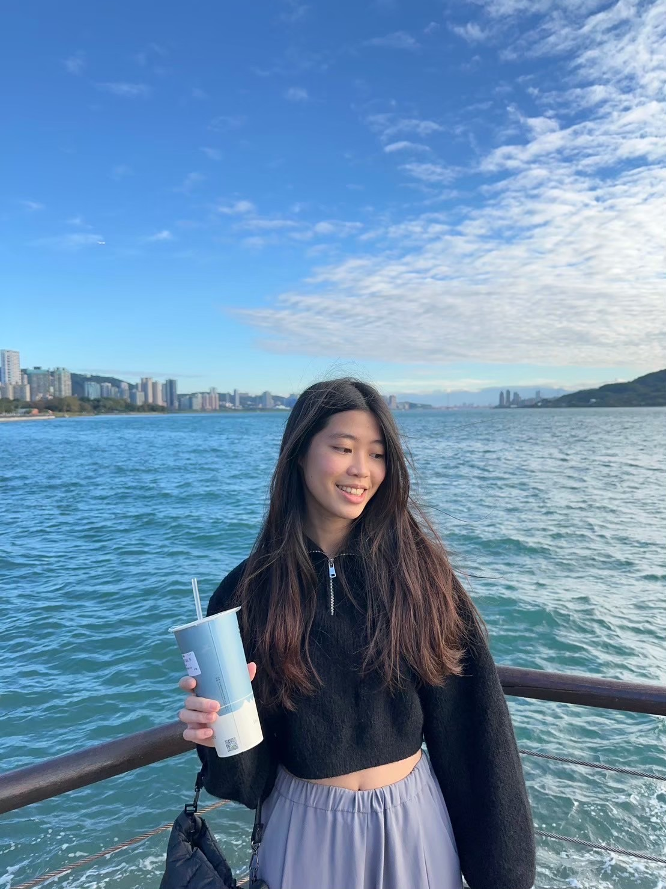
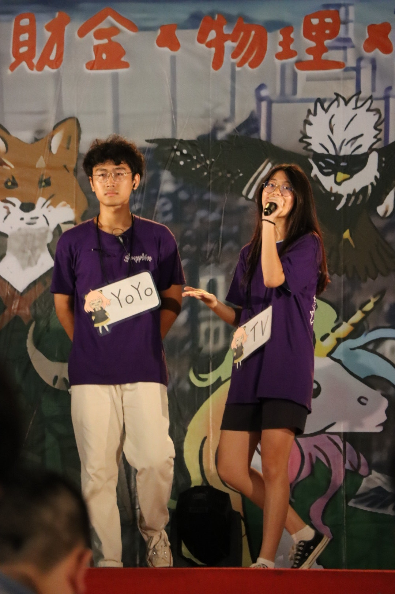
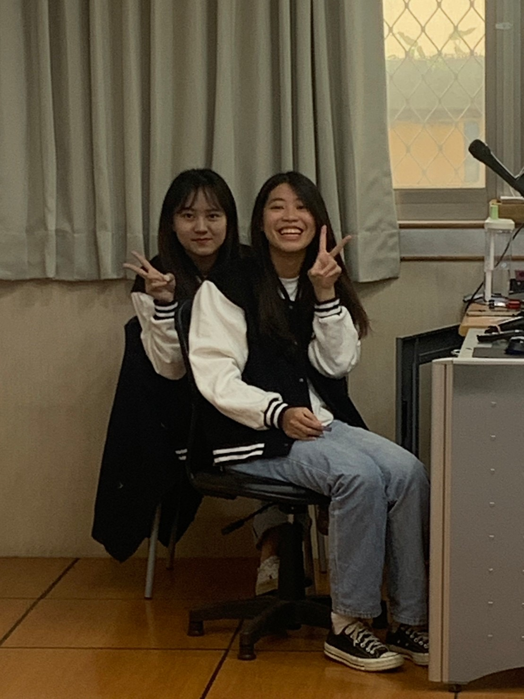
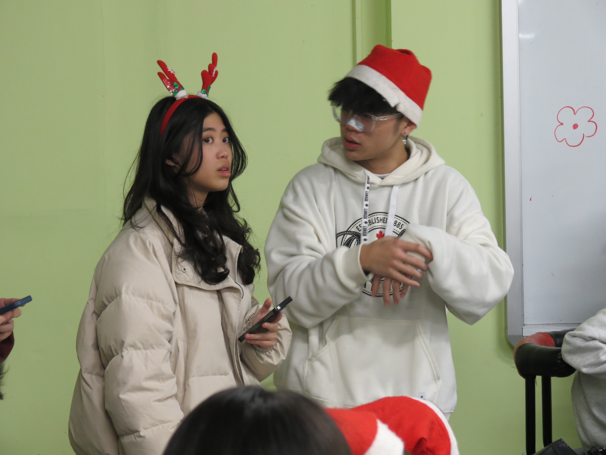

Hello,
Hello,
我是姜予禎！
- 不為做過的事後悔，不為未來的事焦慮 -
About Me
我是一名就讀中原大學財務金融學系的大三生，並同時輔修資訊工程學系，
致力於成為一位兼具財務與技術背景的跨領域人才。
在團隊合作中，我經常擔任提案企劃與溝通協調的角色，負責整合成員意見、釐清需求，並將想法具體化為清晰的方案。
由於善於表達與組織內容，
我也常負責對外簡報與活動主持。我熱愛挑戰，樂於在困難中認識自己、突破自我，
同時秉持著「不為過去後悔，不為未來焦慮」的態度，持續學習與成長。
Skills
程式能力
C/C++ Python HTML CSS因為輔系的關係，在「計算機概論(一)、(二)」中利用C/C++，練習許多演算法，例如:建立二元樹、 ShowHand遊戲、二進位轉換...等，以及物件導向的邏輯。也因此打下扎實的程式基礎；而Python，則是在財金 系上的課程學習，利用Py做資料整理及彙整，並另用套件做迴歸分析，並視覺化資料；HTML/CSS2的部分則是， 因為自己的興趣，透過上網自學的方式上網學習，並設計出介紹自己的網頁。
QGIS能力
利用QGIS分析捷運的規畫，是否讓通勤的學生更方便。
成果展示
Activities

宿營活動主持人

系友日主持人
